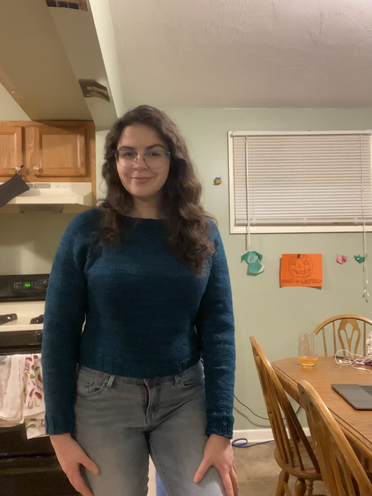
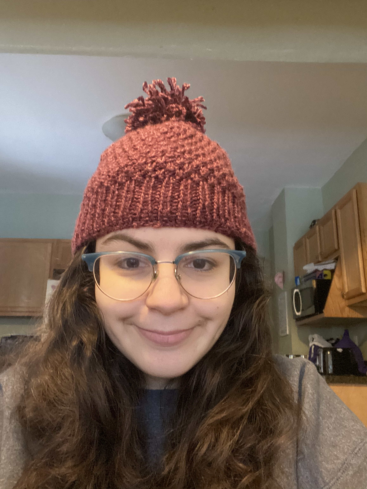

About Me
Education:
Bachelor of Science in Physics and Astronomy from the University of Rochester
PhD Candidate in Astronomy at the University of Illinois at Urbana-Champaign
Research Interests:
Supernovae, cosmology, machine learning, spectroscopy, science pipelines, big data
Publications: arXiv, ORCID
Outside of work:
In no particular order. I enjoy knitting, archery, music (playing and listening!), hanging out with my dog, boxing, tennis, and driving long distances.
This is my dog Maggie:

This is a sweater and hat that I knit:


Research
ML Applications for Spectroscopic Follow-up of LSST Discovered Transients
I am a third-year graduate student who is part of the LSST commissioning team and is working to prepare for the incoming plethora of data.
I am preparing a pipeline for selecting which transient events merit spectroscopic follow-up. Currently, only about 8% of transients are being followed up on due
to the expensive nature of taking spectroscopic data. As LSST will discover 10-100 times the number of transients while available spectroscopic time remains fixed,
this fraction will fall to less than 0.1%. Thus, it is imperative that we have a pipeline to determine what is most important to follow-up on.
I will be implementing the active learning pipeline: the Recommendation System for Spectroscopic Follow-up (RESSPECT).
I am working to deploy and validate RESSPECT on public alerts
from the Zwicky Transient Facility, the DECam Alliance for Transients, and the Young Supernova Experiment. The resulting pipeline will be well-prepared for LSST first
light when the algorithm’s performance will be tested on Rubin commissioning data and optimized for operations. Follow-up spectroscopy of
LSST discovered transients not only reveals the class and redshift but is also key to understanding the physics behind explosive time-domain phenomena such as supernovae,
kilonovae, and tidal disruption events.
Follow-up of Nearby Transients with the Young Supernova Experiment
Many surveys and much telescope time has been focused on obtaining a high-redshift sample of type Ia supernovae,
which are now more well sampled and better calibrated than the low-redshift sample.
The lacking low-redshift samples are responsible for uncertainties on our
cosmological constraints largely due to systematics when calibrating data from various heterogeneous
photometric systems. I analyze incoming transient supernova data to perform spectroscopic follow-up of young
and nearby supernovae using GMOS on Gemini North and South.
With LSST coming online in 2025, this will be crucial to mitigate uncertainties
by improving the low-redshift sample, lest the millions of supernovae LSST will observe will have marginal
impact on constraining cosmological parameters. YSE will replace these outdated legacy data with a large,
well calibrated sample of low-z type Ia supernovae
Contact
Email: amandaw8@illinois.edu
Address: 1002 W Green St, Urbana, IL 61801